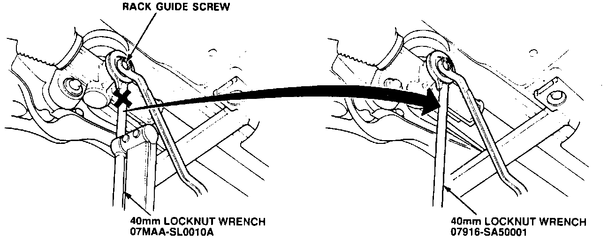

40 mm Wrench For Locknut On Rack Guide Screw (Electric P/S)

The 40 mm locknut wrench (T/N 07MAA-SL0010A) listed in the Service Manual is not available from American Honda. Instead, use the 40 mm wrench provided for '91 Legend (T/N 07916-SA50001) to loosen and tighten the locknut on the rack guide screw. The locknut must be tightened securely, but doing it in combination with a torque wrench as shown in the Service Manual is not necessary. Cross out 07MAA-SL0010A and write in 07916-SA50001 on the following pages of your NSX Service Manual:
[ ] page 17-2, Ref. No. 2.
[ ] page 17-7, 2nd column, picture in step 5.
[ ] page 17-70, last 2 pictures in step 4.